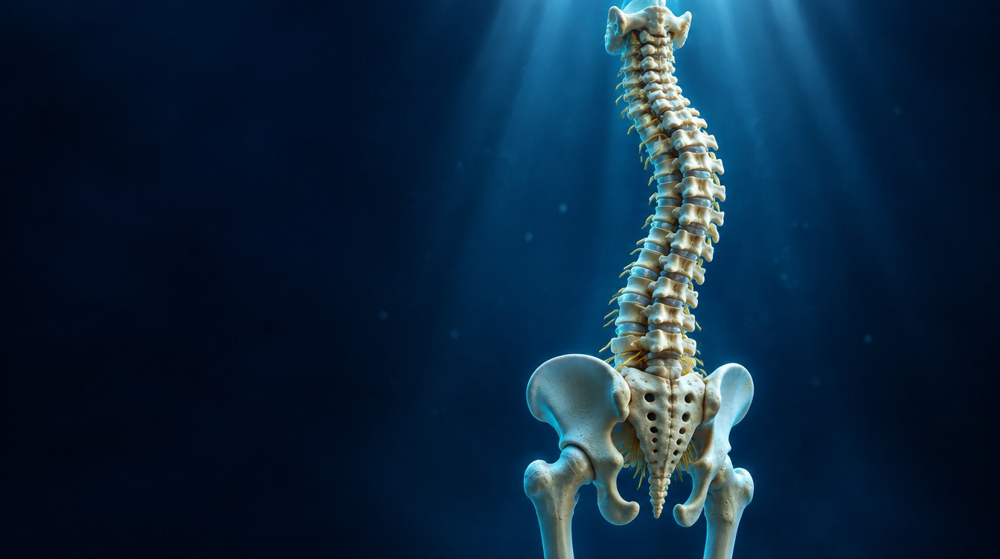
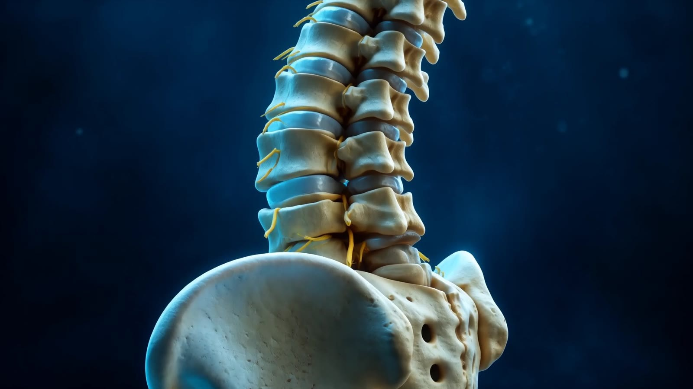
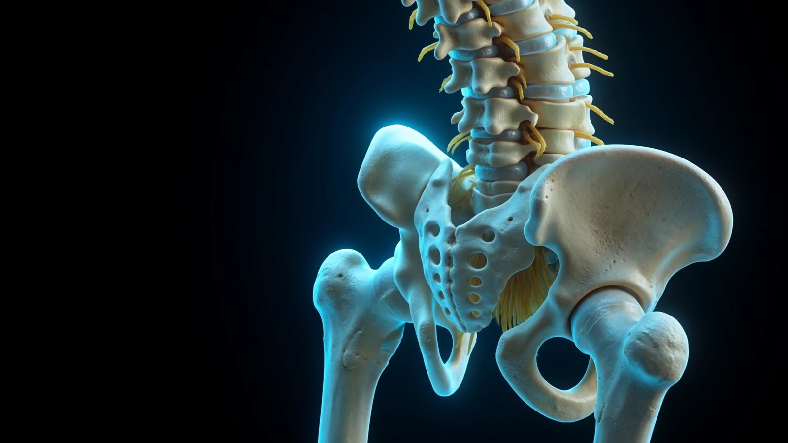

Dove il percorso
è iniziato.
Via Fratelli Rosselli snc
06061 Castiglione del Lago (PG)

FISIOTERAPIA · POSTURA · RIABILITAZIONE
Il tuo corpo ha una storia.
Il nostro percorso inizia dall’ascolto.

02 — UN EQUILIBRIO DA COMPRENDERE
Un viaggio lungo la colonna.
Uno sguardo alla persona, nella sua interezza.
Valutazione posturale e rieducazione globale.

03 — DALL’ASCOLTO AL PERCORSO
Dalla valutazione della postura all’analisi del movimento, il percorso nasce dalle esigenze della persona.
Scopri come lavoriamo ↗Comprendere il movimento.
Costruire il tuo percorso.
LA PERSONA, PRIMA DI TUTTO
Postura, appoggio, mobilità: ogni elemento contribuisce al modo in cui ti muovi. Per questo partiamo dalla valutazione, per costruire un percorso di fisioterapia e riabilitazione su misura.
La valutazione iniziale ↗I NOSTRI SERVIZI
Dalla comprensione del movimento
al lavoro sul recupero funzionale.
Conoscere il punto di partenza.
Analisi posturale ↗Analisi del movimento ↗Analisi del cammino ↗Analisi della corsa ↗Analisi del piede e dell’appoggio plantare ↗Definire il lavoro, insieme.
Rieducazione posturale e metodo globale ↗Posturologia e decompressione spinale ↗Manipolazione fasciale ↗Riabilitazione del pavimento pelvico ↗Una visione più ampia del benessere.
Osteopatia pediatrica ↗Ortopedia ↗Nutrizione e prevenzione ↗Riabilitazione antigravitaria con R-FORCE ↗TECNOLOGIA AL SERVIZIO DELLA PERSONA
TECNOBODY
Rieducazione posturale globale e lavoro sulle catene muscolari.
DECOMPRESSIONE SPINALE
Trazioni controllate nell’ambito di percorsi di posturologia decompressiva.
RIABILITAZIONE ANTIGRAVITARIA
Movimento con carico alleggerito e progressione personalizzata.
VICINI A TE
Il nostro percorso cresce.
Ora anche a Tavernelle e Città della Pieve.
Via Fratelli Rosselli snc
06061 Castiglione del Lago (PG)
Contattaci per informazioni
e appuntamenti nel nuovo studio.
Contattaci per informazioni
e appuntamenti nel nuovo studio.
INIZIAMO DA TE
Il tuo percorso inizia da una valutazione.
Parliamone insieme.